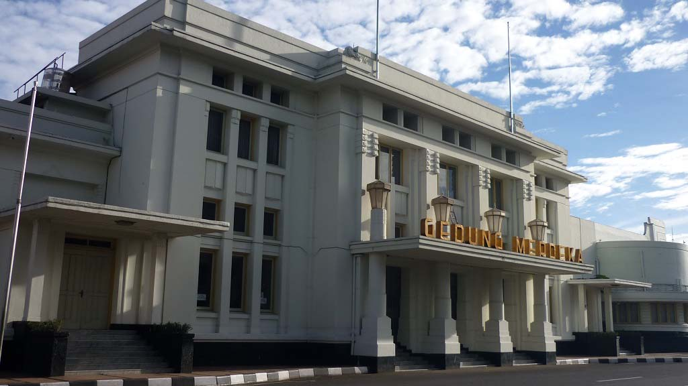

Travel Destinations
Taman Lalu lintas
The existence of a Traffic Park is very important as a vehicle for play and education for children so that later they can be safe, comfortable, and can understand how good a good cross. Green area that keeps the air fresh and makes the mind fresh.
Teras Cikapundung
Enjoying a variety of Tourist Places in Bandung today is not only synonymous with tourist objects such as culinary, shopping, nature and more. New tourist destinations such as Bandung city park now so something interesting to visit.

Teras Cihampelas
The length of the Bandung Cihampelas Skywalk area is 450 meters, with a road width of 9 meters and a height of 4.6 meters of road surface, with frame construction material of H-Beam steel and concrete on the floor, with granite and wooden base.

Gasibu Field
Gasibu field that used to be a place selling vendors street vendors, is now converted into a sports venue. Deiki, One of the visitors said the reason for choosing Gasibu Field to exercise is because of the condition of the track jogging is very adequate.

Nuart Sculpture Park
Not just to see the number of great works of art from close range of sculptural works and paintings of a maestro Nyoman Nuarta, which by art observers not only prioritize details of statues, shapes, aesthetics, beauty, size and other physical things.
Museum Geologi
Bandung geology museum is a unique place to spend vacation time while traveling in the city of Bandung. In addition to studying geological developments in Indonesia and their usefulness for human life, there are also ancient fossils.

Museum Barli
The Barli Museum was inaugurated on October 26, 1992 as a means to get to know one of the prominent painters from Bandung, Barli Sasmitawinata. Here we can see the development of Barli art style from time to time.

Monument Perjuangan
Monument Perjuangan - Most people know this monument is limited to the outside surface only. Right under the Monument Perjuangan there are facilities that can be accessed by visitors for free. What are the facilities? The answer is the Museum.
Museum Negeri Sri Baduga
Sri Baduga State Museum located on Jalan B.K.R. 185 pioneered since 1974 by utilizing the land and building of the former Teddyga kewedanaan become the most inspired cultural destinations in Indonesia Year 2018

Dispusipda Jabar
West Java Provincial Library and Filing Service (DISPUSIPDA) is established by West Java Provincial Regulation No. 06 of 2016 on the Establishment and Composition of Regional Devices of West Java Province.

Amazing Art Word
Amazing Art World is a Tour with 3D Art Museum Concept, Featuring 6 Gallery, 13 Zones, 150 Photo Spots on ± 4.5 ha land with Museum building area of ± 2 ha making Amazing Art World Bandung Indonesia as the World's Largest 3 Dimensional Museum.
Studio Rosid
Studio Rosid - Here a lot of old stuff is full of stories. The goods are neatly arranged. It feels good when you're sitting here while chatting with friends of the same chat with a tone of mutual sharing the story behind
Museum Asia Afrika
The KAA Museum, where Asia-Africa history is hoisted, where the Asia Africa Partnership is established for a better future. Located in Bandung, KAA Museum has a history as a place of the Asian-African Conference of 1955.
Culture
Saung Angklung Udjo
Saung Angklung Udjo (SAU) is a place that is where the show, and workshop of musical instruments from bamboo. In addition, SAU has a goal as an educational laboratory and learning center to nurture Sundanese culture.
China Town
China Town - Tan Sioe How who founded the "Babah Kuya" herbal stall in Jln. Behind the Market, 1910 was one of the pioneering shops in the region. The Chinese culture, Drs. Soeria Disastra, said that Chinans exist, but there is no limit.
Kabaret Bandung
Kabaret is a show or staging art that comes from the Western World where there is usually entertainment, music, comedy and execution of theatrics or dances. Cabaret shows can range from political satire to light entertainment.
Street

Braga Street
Braga street is identical with the tourist area in Bandung. The street is also often called the old city of Bandung has many tourist attractions that can be visited by tourists.

Asia Afrika Street
The Asian-African Way is well known throughout the world. Understandably this road is where the establishment of Independence Building which is full of history of Asian-African countries.
Contact Us
you can contac me in here.
- Jalan example no 123 Bandung, Jawa Barat
- + 1235 2355 98
- aris.purnomo07@gmail.com
- https://github.com/arispur
Comment
Taman Lalu Lintas
The existence of a Traffic Park is very important as a vehicle for play and education for children so that they can be safe, comfortable and able to understand how good traffic is going.
A spacious environment and equipped with various recreational vehicles suitable for the whole family. It has a cool environment with over 1000 trees. It is dominated by green grass & old trees that keep the air fresh and make the mind fresh.
Kids can have fun there. Green areas that remain intense so the air becomes fresh and makes the mind fresh. Parents can also release a variety of fatigue in the environment of the park is very beautiful and quiet while waiting for his children.
More info: https://teguhsiswanto11.github.io